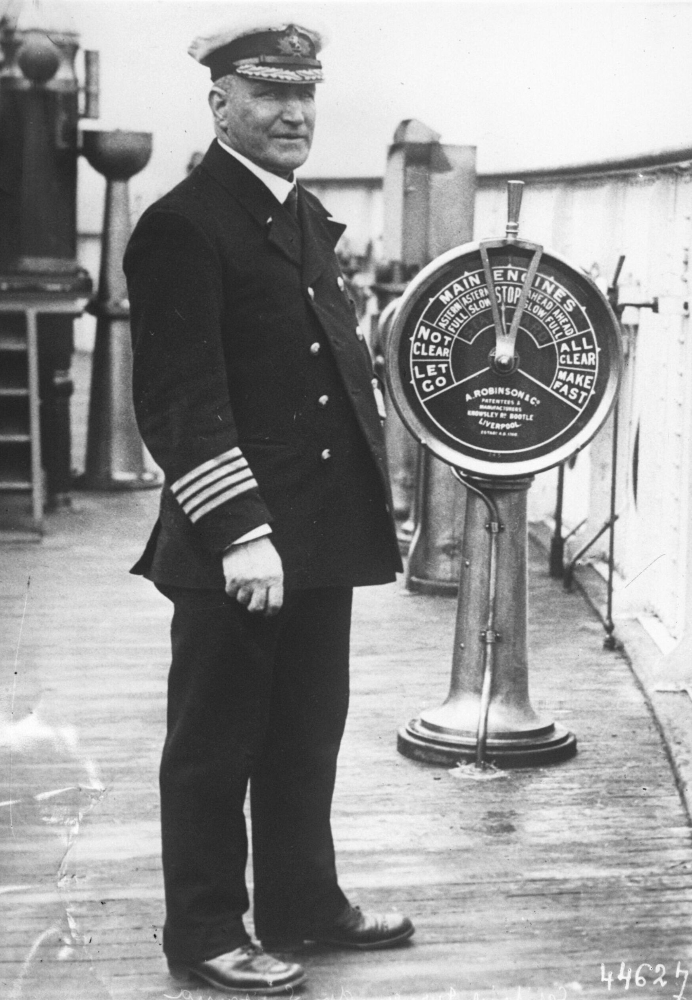

Chapter 3
Captain Turner’s Orders
The liner and the submarine moved toward each other across two thousand miles of ocean, each following orders, each carrying out an assigned role in a drama that neither fully understood. On the bridge of the Lusitania, berthed at Pier 54 on the North River, a man in a new bowler hat was reading through the season’s sailing orders one final time.
William Thomas Turner had bought the hat in New York, as he always did when taking command of a vessel. It was a ritual of his, a private ceremony marking the weight of responsibility. The hat was black, stiff-brimmed, and immaculate. His officers knew him as Bowler Bill. He was fifty-eight years old, heavyset, with a broad weathered face and the deliberate movements of a man who had spent forty years learning the sea’s patience. He had joined Cunard in 1878 as fourth officer, left to gain broader experience, returned in 1889, and had held command since 1903. He carried an Extra Master’s Certificate, the highest qualification the Board of Trade issued. By the record, there was no more experienced man in the Cunard fleet.
The orders he held that morning at Pier 54 were not Cunard’s alone. They came in a sealed packet, Admiralty stationery, part of a series of directives issued to merchant captains through the spring of 1915 as the U-boat threat around the British Isles intensified. The packet contained recommendations. It did not contain commands in the naval sense, because the RMS Lusitania was not a naval vessel. She was a merchant ship under Admiralty guidance, and the guidance was advisory. That distinction mattered more than anyone on the bridge yet recognized. The roots of the Admiralty’s later attempt to blame Captain Turner for the sinking began in these first reports and the ambiguous nature of these instructions.
The directives told Turner to avoid headlands. The Irish coast was lined with them — the Old Head of Kinsale, Hook Head, Tuskar Rock — prominent points of land where ships naturally converged on familiar courses, where a submarine could lie in wait at known bearings and calculate interception from a fixed geographic reference. Avoiding headlands meant staying farther offshore, taking the mid-channel course, keeping to deeper water where a submarine’s periscope was harder to spot against the chop and where the torpedo’s range became a more demanding calculation. The recommendation was sound in principle. In practice, it required Turner to abandon the well-established steamer lanes that every transatlantic master had followed for decades, the lanes that pilots and lookouts and port authorities expected, the lanes that the Lusitania’s passengers had paid to travel.
The directives told him to steer a mid-channel course. This was complementary to the first instruction and equally general. The Irish Sea narrowed between the Welsh and Irish coasts, and the approach to Liverpool required passing through waters that a submarine could patrol with economy. A mid-channel course gave the ship more sea room on either side, more room for evasive maneuver, more distance from any U-boat lurking inshore. But the mid-channel was also a defined corridor. It appeared on charts. If a submarine commander studied the pattern of merchant traffic, and Schwieger had been doing exactly that, the mid-channel was as predictable as any headland.
The directives told him to run at full speed off the Irish coast. This was the most operationally specific instruction in the packet, and the most demanding. The Lusitania could make twenty-one knots, even in her wartime condition with three of her four boiler rooms cold. Full speed meant burning coal at a rate that would deplete her reserves before reaching Liverpool if she sustained it for too long. The ship had departed New York with enough coal for the crossing at her standard cruising speed, not for prolonged dashes at maximum output. Running at full speed off Ireland meant knowing precisely when the Irish coast was near enough to justify the expenditure, and that calculation depended on accurate position-keeping, which depended on weather, which on the North Atlantic in May was never guaranteed.
And the directives told him to zigzag in dangerous waters. This instruction, more than any other, would come under scrutiny. Zigzagging meant altering course at intervals, sometimes to port, sometimes to starboard, so that the ship’s track described a sawtooth pattern across the ocean rather than a straight line. The purpose was to defeat the submarine’s fire-control solution. A torpedo was not aimed at a ship’s present position but at a predicted point where the ship would be when the torpedo arrived, given its speed and the target’s speed and bearing. A ship that changed course at unpredictable intervals made that prediction unreliable. The submarine commander had to guess not only the target’s speed and heading but its future course alterations, and a wrong guess meant a miss.
The instruction to zigzag was not an order. It was a recommendation. The word “should” appeared, not “shall.” And the phrase “in dangerous waters” carried its own ambiguity. What constituted dangerous waters? The entire Irish Sea? The approaches to Liverpool? The area south of Ireland where U-boats had been reported? The Admiralty’s intelligence on submarine positions was incomplete, and Turner did not have access to the full picture. He had the recommendations, his own experience, and whatever wireless messages reached him from shore stations during the crossing.
The Admiralty knew more than Turner. That was the architecture of the situation, and it was structural, not accidental. Room 40, the naval intelligence unit operating from the Old Building in Whitehall, was intercepting and decrypting German naval wireless traffic. The intercepts provided a picture of U-boat movements that was partial but real, a picture that grew clearer as the codebreakers refined their methods and as the Germans transmitted more operational signals. The Admiralty knew, or had strong indications, that U-boats were operating in the Irish Sea and off the south coast of Ireland in the spring of 1915. What it did not do was transmit that picture in full to the merchant captains who needed it. The intelligence was classified, compartmented, considered too sensitive to distribute widely because its distribution might reveal the source. The merchant captain sailed with recommendations. He did not sail with the map.
Turner’s map was silent. It showed the coastlines, the headlands, the steamer lanes, the depth soundings. It did not show where the Admiralty believed U-boats were patrolling, because that information was not on it. It did not show the grid of intercepted positions that Room 40 was building day by day, because that grid was locked in a room in Whitehall. Turner was a master mariner with forty years of experience, and he was sailing into waters where an intelligence apparatus existed that could have told him what his experience could not. He did not know it existed. He had his orders, and his orders were an ambiguous protocol — recommendations worded as suggestions, general where they needed to be specific, advisory where they needed to be mandatory.
The man himself was not reckless. Turner’s career showed a pattern of conservative seamanship. He had joined Cunard Line in 1878 as Fourth Officer, left to gain experience, and returned in 1889. In 1903, he was given his first command, the Aleppo. He had since commanded the Aurania, the Caronia, the Ivernia, and the Mauretania before taking the Lusitania. His record was clean. He was not a man given to shortcut or bravado. He had replaced Captain Daniel Dow, who had commanded the Lusitania on her earlier wartime crossings and who had left the ship under circumstances that Cunard explained publicly as illness. Dow had been stressed. Operating a passenger liner through declared war zones, past coastlines where submarines had been sighted, under instructions that told you to be careful without telling you precisely how, had worn him down. Cunard said he was tired and really ill. He went home. Turner came in.
The change was routine. Cunard rotated its captains. Turner was available, qualified, and senior. He took command of the Lusitania for her 202nd crossing with the same professional composure he had brought to every previous command. If he felt the weight of the German embassy’s warning, published in the New York newspapers that very morning beside Cunard’s advertisement for the sailing, he did not record it. The warning was addressed to travelers. It stated that a state of war existed and that British or Allied vessels were liable to destruction in the waters adjacent to the British Isles. It advised Americans that taking passage on such a vessel was at their own risk. The Lusitania flew the British flag. The warning sat beside her advertisement. It was not ambiguous.
The passengers who boarded at Pier 54 that morning walked past the warning, or past the newspapers that carried it, or past the rumor of it, and they walked up the gangway. Among them were names that the record preserves. Charles Lauriat, the Boston bookseller and publisher, traveling with business papers and a collection of prints. Alfred Vanderbilt, the American railway heir, traveling without his valet, who had missed the sailing. Theodate Pope, the Connecticut architect and philanthropist, traveling with her companion Edwin Friend. Sir Hugh Lane, the Irish art collector and nationalist, rumored to be carrying paintings in a sealed tube. There were 1, 264 passengers, three stowaways, and a crew of 693. The total was 1, 960 souls.
They boarded a ship that was not in her peacetime condition. The Lusitania had been laid up for the winter, and her return to service had required modifications. Three of her four boiler rooms were closed, reducing her available power. She could still make twenty-one knots, but she could not sustain the twenty-five that her peacetime advertisements had once promised. Her funnels had been painted black, her hull gray, in a wartime scheme that was meant to reduce her visibility at sea. She was ordered not to fly any flags in the war zone. There was no hope of disguising her identity. Her four-funnel profile was recognized in every port in the Atlantic. No one attempted to paint her as a neutral vessel or to alter her silhouette. She sailed as herself.
The cargo was loaded at the same pier, through the same hatches, under the same bills of lading that documented every shipment.
The manifest listed war supplies, among them 4, 200 cases of. 303 rifle cartridges—amounting to 4.2 million rounds—as well as shrapnel shell casings and percussion fuses.
The cartridges were small-arms munitions, manufactured for the British war effort, shipped from New York to Liverpool on a passenger liner because the passenger liner was available and because the cargo paid. All of it was declared. All of it was inspected by the American customs authorities before departure. The shipment was legal under American law, which permitted the sale of munitions to belligerent powers, and it was consistent with the established practice of American neutrality as defined in Washington.
The presence of this cargo would become, after the sinking, one of the most contested facts of the case. On the first of May, it was a line item on a manifest, loaded through a hatch, stowed in a hold, and forgotten by everyone except the clerk who recorded it.
Turner’s final hours at Pier 54 were consumed by the business of departure. The loading of cargo and baggage continued through the morning. The passengers boarded in stages, first class through the main gangway, second and third class through the lower entries. The purser’s office issued tickets and assigned cabins. The chief engineer reported on boiler readiness and coal reserves. The wireless operator tested his equipment. The deck crew prepared the mooring lines for casting off. Turner supervised all of it from the bridge and the deck, moving between the two with the unhurried authority of a man who had done this dozens of times.
The sailing was scheduled for ten in the morning. It was delayed. The cargo loading ran late, and the tide and harbor traffic in the North River required adjustment. The Lusitania did not cast off until the afternoon. The delay meant that the ship’s position on the Atlantic would shift slightly, that her arrival off the Irish coast would come at a different hour than planned, that the calculation of when to increase speed and when to alter course for the Irish Sea would be made against a slightly different clock. These were small shifts. They were the kind of shifts that a master mariner absorbed as routine. They would matter.
As the ship prepared to leave, a document sat in the chart room or in Turner’s cabin or in the packet that the Admiralty had sent — the text of the Admiralty memorandum to merchant captains, circulated in April 1915, containing the directives that would govern his approach to the war zone. The memorandum was not long. It listed the recommendations: avoid headlands, steer mid-channel, run at full speed, zigzag. It did not specify the intelligence on which these recommendations were based. It did not name the submarines or their positions. It did not tell Turner what Room 40 knew. It was a set of general precautions addressed to every merchant master entering the war zone, not a specific warning to a specific ship about a specific threat.
Turner also operated under a commercial constraint that the Admiralty’s directives did not address. He was under orders to time his arrival at Liverpool for high tide, so that the ship would not have to wait to enter port. The Mersey bar and the approach to the Prince’s Landing Stage required sufficient water, and the Lusitania’s deep draft meant that she could not cross the bar at low tide. If she arrived too early, she would anchor in the river and wait. If she arrived too late, she would miss the tide and wait for the next one.
Either way, waiting meant time in the war zone, time in waters where submarines operated, time at anchor or at slow speed in a predictable location. Turner’s orders from Cunard were to arrive at high tide. His orders from the Admiralty were to run at full speed off the Irish coast. These two instructions could conflict.
He was under orders to time his arrival at Liverpool for high tide so that the ship would not have to wait to enter port. Thus, he chose to travel more slowly.
However, Turner could have also accomplished his desired arrival time at high speed by zigzagging, albeit with greater coal consumption. The choice was his to make, within the discretion that the advisory language of the Admiralty directives granted him. He could slow down to time the tide, or he could maintain speed and zigzag to burn the excess hours. The directives recommended zigzagging and recommended full speed. They did not require either.
The commercial order to arrive at high tide came from Cunard. The safety recommendations came from the Admiralty. When they pointed in different directions, the master had to decide which to follow, and the decision was his alone, made on a bridge with a silent map and a packet of recommendations worded as suggestions.
The tension between these imperatives was not unique to Turner. Every merchant captain entering the war zone faced it. The Admiralty’s directives were written for a general case, not for a specific ship on a specific day. They assumed that the master would use his judgment, apply his experience, and make the right choice. They assumed that the master had the information he needed. He did not. The map was silent because the intelligence that could have spoken through it was locked in a room in London, and the key to that room was classification, and classification was the architecture of a system that protected its sources more carefully than it protected its ships.

Turner stood on the bridge as the afternoon light slanted across the North River. The tugs were coming alongside. The mooring lines were being singled up. In a matter of minutes, the Lusitania would cast off and begin the 202nd crossing of her service, the crossing that would take her past the Old Head of Kinsale and into the patrol zone where U-20 was even now moving through the water, running on batteries, carrying her complement of torpedoes, under the command of a thirty-year-old Kapitänleutnant named Walther Schwieger.
The two men did not know each other. They had never met, would never meet. One was a British merchant captain with forty years of experience and an Extra Master’s Certificate, the other a German naval officer, Kapitänleutnant Walther Schwieger, who had joined the Imperial German Navy in 1903 and the U-boat Service in 1911, taking command of U-20 in December 1914. One sailed a passenger liner carrying nearly two thousand people and a cargo of munitions components, the other sailed a submarine carrying a crew of thirty-five and a weapon designed to send ships to the bottom. They were professionals, each doing his job, each following the orders he had been given.
The difference was in the orders. Schwieger’s orders were clear. He operated under the German declaration of February 1915, which announced that the waters around the British Isles were a war zone and that Allied merchant vessels would be destroyed. The declaration had provoked protest from Washington and debate in Berlin, but it was in force, and Schwieger was empowered to act on it.
He could attack. He could sink. He could do so without warning, without offering the crew a chance to take to the boats, because the nature of submarine warfare made such niceties impossible.
A submarine that surfaced to warn a merchant ship exposed itself to ramming or to gunfire, and the British had issued instructions to merchant captains to do exactly that. Schwieger knew this. His orders accounted for it. He was to sink what he could, and he was to survive. His approach had already been noted for being cavalier, sometimes attacking without being sure of a target’s identity.
Turner’s orders were not clear. They were hedged with qualifications, built on assumptions, dependent on intelligence he did not have. They told him to avoid headlands without telling him how far offshore to go. They told him to steer mid-channel without telling him whether the channel itself was watched. They told him to run at full speed without telling him when to start or when to stop. They told him to zigzag in dangerous waters without telling him where those waters began.
The ship he commanded was a paradox. She was fast but not fast enough. She was armed with nothing but her speed and her bulk, and her bulk made her a target. She carried civilians and she carried cargo, and the cargo included munitions, and the munitions made her a legitimate prize under the rules of war as Germany now interpreted them. She sailed under the British flag, on a published schedule, on a route that every mariner in the Atlantic knew, toward a port that every submariner in the German navy had studied on his charts.
The passengers who lined her rails as the tugs nudged her away from Pier 54 did not know any of this. They saw a ship, a great Cunard liner, four funnels, gray hull, the name painted on her bow. They saw a vessel that had crossed the Atlantic hundreds of times, that had carried kings and millionaires and immigrants, that had set speed records in her youth and still moved faster than almost anything else on the water. They saw safety, or they saw calculated risk, or they saw nothing at all except the beginning of a voyage. They trusted the ship. They trusted the captain. They trusted the company that had sold them their tickets. They trusted the sea, because the sea had always carried them before.
The gangways were hauled aboard. The lines were cast off. The tugs pushed the great hull into the current, and the current caught her, and the screws began to turn, and the Lusitania moved away from New York, away from the pier, away from the crowds on the dock and the reporters with their notebooks and the German embassy’s warning in the morning papers. She moved down the North River, past the Battery, past the quarantine station, past the last of the harbor lights, and out into the Atlantic, where the open water waited, and the war zone waited, and the submarine waited.
On the bridge, Turner watched the shoreline recede. The bowler hat sat on its hook. The chart room held his silent map. The packet of Admiralty directives lay with the sailing orders. The ship was on her 202nd crossing, carrying 1, 959 people, 5, 931 cases of munitions components, and the accumulated weight of recommendations that told her master to be careful without telling him precisely how or precisely where.
The Lusitania was at sea, on a known schedule, with ambiguous instructions, heading toward the patrol zone of U-20.